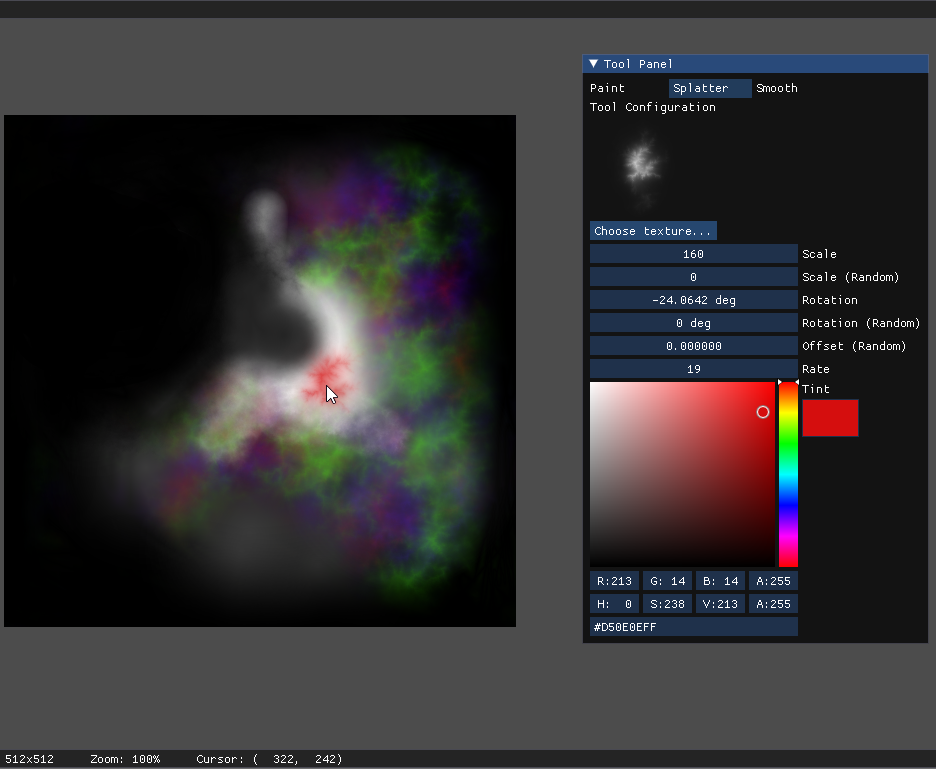
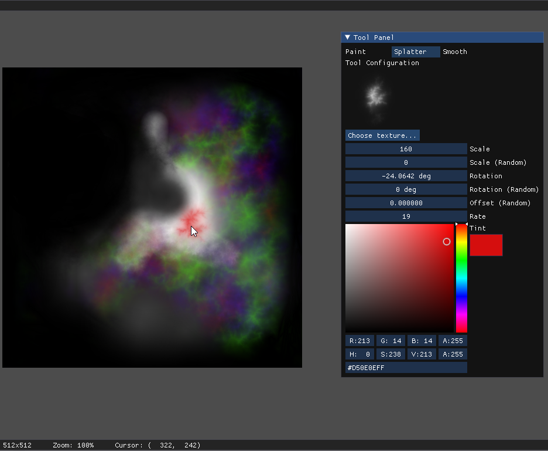
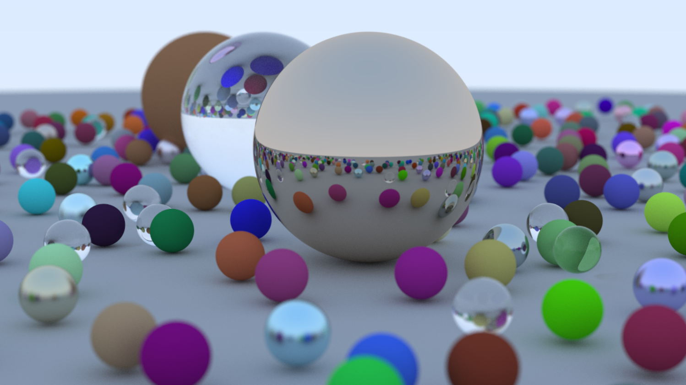

Shaders
I've created a couple of shaders – functions which returns a color given a pixel as input. Despite their simplicity, these shaders have the power to create neat images. Check out one of my creations below (click to zoom):
I've been programming for fun since high school, and have worked on many projects. Here are a selection of them:
Unleash your inner beast in Lunar Haze as Lycan the werewolf. Dodge the villagers' hunt, build your power under the veil of night, and fight for supremacy in a heart-racing midnight battle.
Served as the software lead, developed for the Introduction to Game Design course at Cornell University. The project, completed over a semester, involved a team of twelve and was built using Java with LibGDX.
I applied methods in game physics, artificial intelligence, and computer graphics to enrich the overall functionality and design of the project.
As the lead, I undertook the responsibility of architecting the technical framework, distributing task assignments, and offering guidance to team members as they encountered technical challenges.
 

Terrapainter is an application which converts a user-painted heightmap into 3D terrain. The essence of the application: you paint a heightmap, hit space, and pretty a 3D island is generated for you to explore.
This project was a collaborative effort within a team of four, as a final project for the Computer Graphics Practicum course at Cornell University. Built on top of C++20 and OpenGL 4.5, one of our main goals was to understand the complexity of the realtime graphics pipeline.
My focuses included interfacing with OpenGL, terrain generation, and lighting.
I have a few projects within the realm of Computer Graphics, a field that has intrigued me deeply since I first delved into programming (it actually was the reason I started!):
I've created a couple of shaders – functions which returns a color given a pixel as input. Despite their simplicity, these shaders have the power to create neat images. Check out one of my creations below (click to zoom):
A wrapper around LWJGL, consisting of a custom ECS system and interfaces for Meshes, Shaders, Textures, and Input.
PlaceholderCreated a ray tracer by following Peter Shirley's Ray Tracing in One Weekend, translating C++ to Rust. A final render:
A clone of tetris, created in a team of four for a functional programming class. Written entirely in OCaml.
I concentrated on the overall game logic, covering the single-player, player-vs-bot, and player-vs-player modes. Further, implementing the intricacies of Tetris movement along with the garbage and scoring systems.